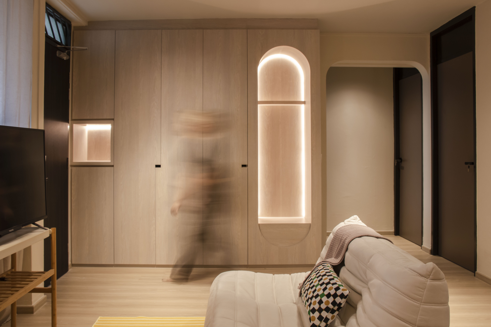
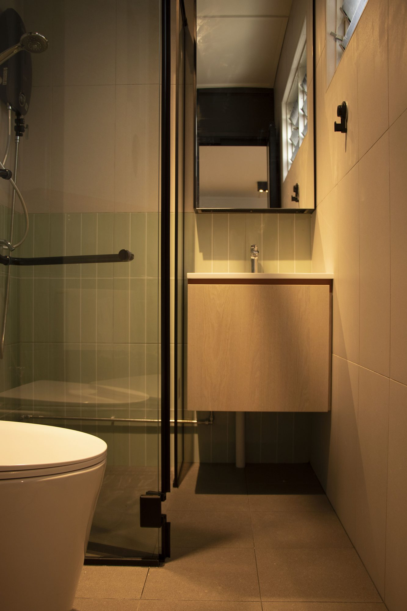
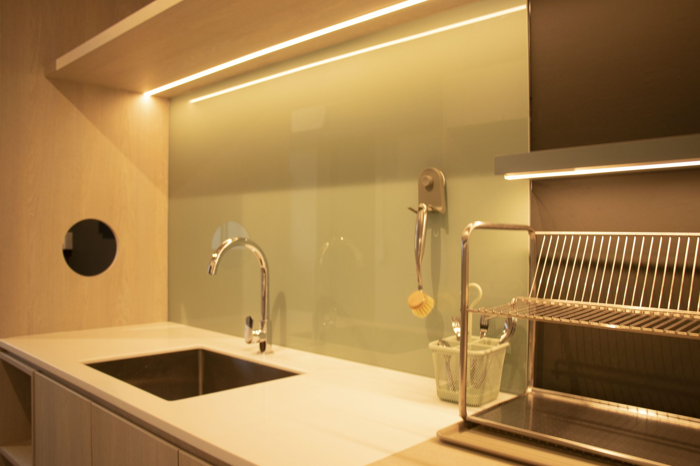
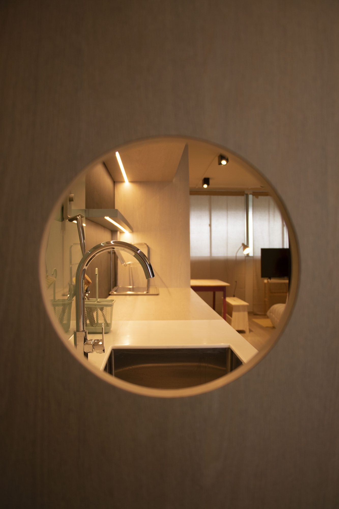
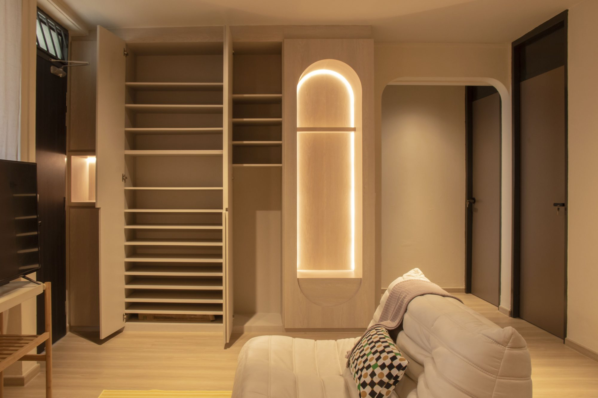
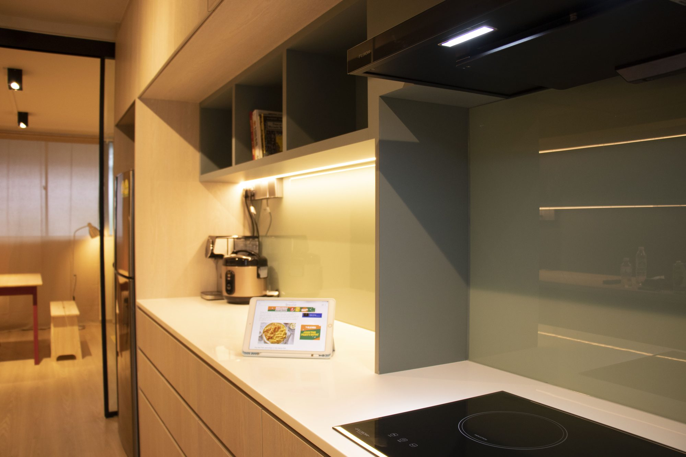
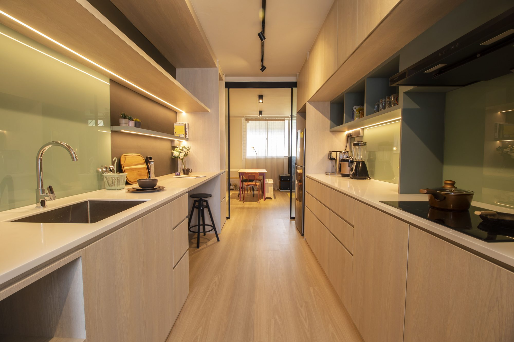
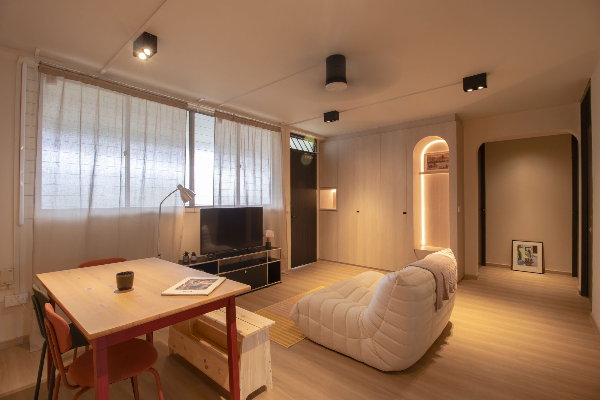
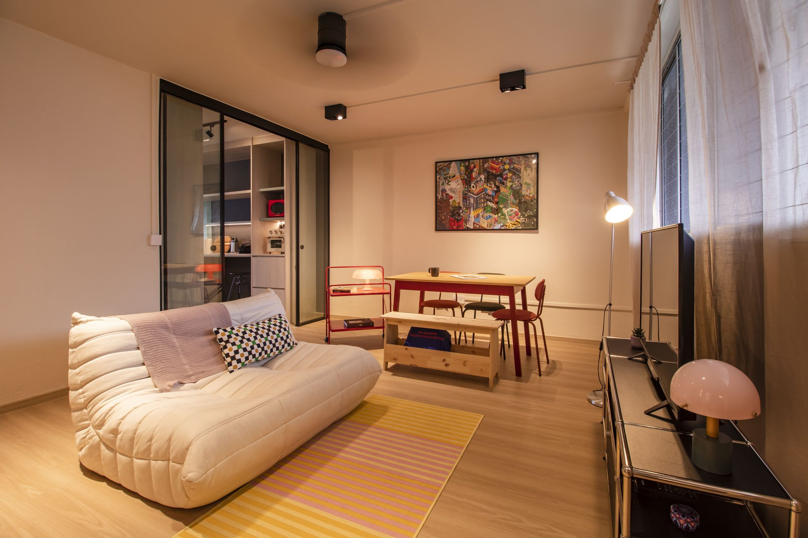

This one's for a cat who technically doesn't live here anymore, and an owner who designed around the memory anyway. Color does the heavy lifting — contrasts that shouldn't work together but do, surfaces picked because they survive claws and forgetful watering schedules alike. Nothing precious, nothing that asks to be babied. A rental that doesn't act like one.







